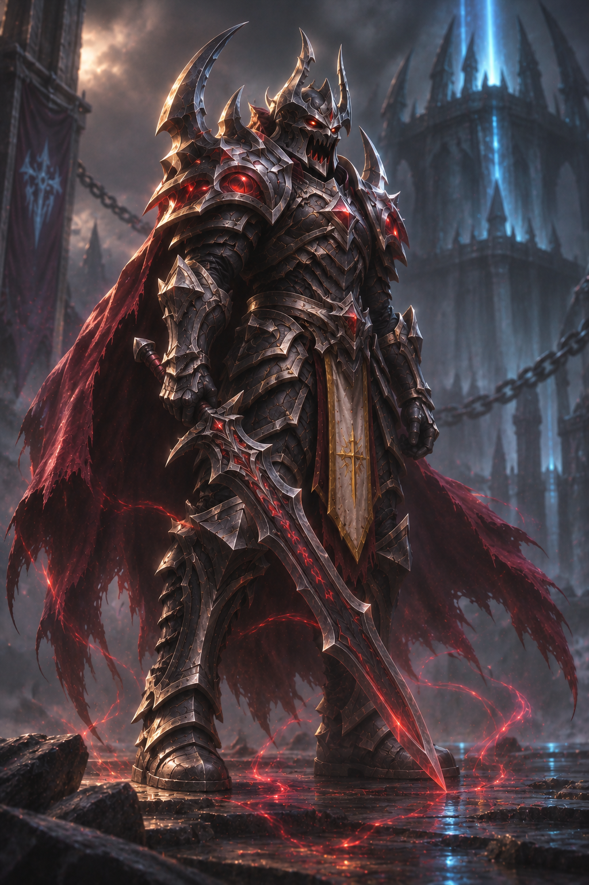
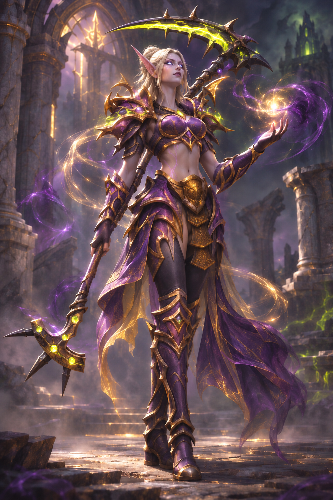
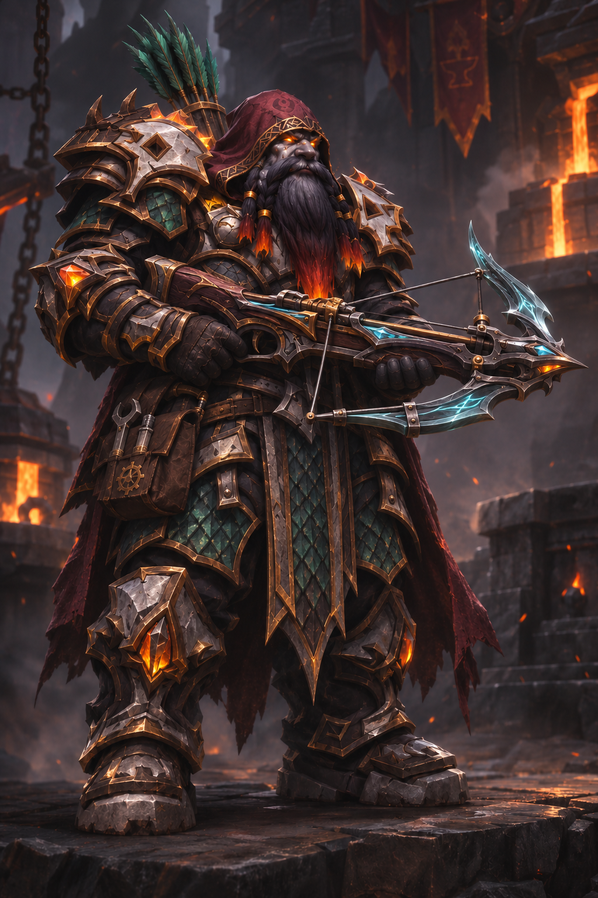

Meine Charaktere

Gaiter
„Er schwört keine Eide mehr. Er erfüllt den einen, den er einst gebrochen hat.“
Charakterdaten
Rasse: Mensch
Klasse: Todesritter
Spezialisierungen: Blut und Unheilig
Rolle: Tank
Geschichte
Einst war Gaiter ein Paladin. Er machte sich auf die Suche nach Prinz Arthas, im Glauben an seine Pflicht und die Heiligkeit seiner Bestimmung.
Doch sein Weg endete während der berüchtigten Säuberung von Stratholme. Er starb als Opfer jener Ereignisse, die das Schicksal der Stadt für immer veränderten. Die Seelen der unschuldigen Menschen, denen er selbst das Leben genommen hatte, ließen ihn keinen Frieden finden.
Später kehrte Arthas zu den Ruinen von Stratholme zurück und erweckte Gaiter als einen seiner Krieger wieder zum Leben. So wurde aus dem ehemaligen Paladin einer der grausamsten Todesritter seiner Armee.
Er nahm an zahlreichen Schlachten teil, bis Arthas ihn während des Angriffs auf die Kapelle des hoffnungsvollen Lichts opferte.
Doch selbst nach allem, was er erlebt hatte, blieb in Gaiter etwas zurück, das die Dunkelheit nicht zerstören konnte.
Mit der Zeit erinnerte er sich an seine früheren Eide und erkannte, wie sehr er sie verraten hatte. Die Erkenntnis seiner Taten wurde zu einer so schweren Last, dass er sich einen neuen Eid auferlegte: Bis zum Ende seiner Existenz wollte er diejenigen beschützen, die er einst ausgerottet hatte.
Als persönliche Strafe beschloss Gaiter, für immer auf seine Stimme zu verzichten. Seitdem spricht er kein einziges Wort mehr. Seine Taten sind der einzige Weg, auszudrücken, was er nicht mehr sagen kann.

Lidrael
„Um mein Ziel zu finden, brauche ich keine besonderen Augen. Um es zu vernichten, brauche ich keine fremden Kräfte. Dafür brauche ich nur Können, Erfahrung und Entschlossenheit.“
Charakterdaten
Rasse: Nachtelfe
Klasse: Schurkin
Spezialisierungen: Täuschung und Meucheln
Rolle: Schaden
Geschichte
Lidrael diente einst als persönliche Attentäterin von Tyrande und Malfurion. Doch mit der Zeit verlor sie den Glauben an ihre Ziele und Methoden und entschied sich, ihren eigenen Weg zu gehen.
Später schloss sie sich Illidan Sturmgrimm an und wollte eine Dämonenjägerin werden. Doch Lidrael besaß keinerlei magisches Talent und nicht einmal ein Gespür für Magie. Deshalb sollte sie zunächst ausgeschlossen werden.
Anstatt aufzugeben, bat sie darum, bleiben zu dürfen. Sie trainierte auf Augenhöhe mit den Dämonenjägern und studierte ihre Kampftechniken sowie den Umgang mit dämonischer Energie.
Auch wenn sie nie eine echte Dämonenjägerin wurde, veränderten diese Erfahrungen ihren Kampfstil. Sie blieb eine Schurkin und verband ihre Fähigkeiten als Assassinin mit den Techniken, die sie von den Dämonenjägern gelernt hatte.
Im Kampf verwendet sie Dolche, die aus den Rippen von Dämonen gefertigt wurden. Ihre Stärke liegt nicht in der Magie, sondern in ihrem Können, ihrer Präzision und ihrer Anpassungsfähigkeit.

Lerasta
„Licht, Leere, Teufelsmagie … Was macht das schon für einen Unterschied? Am Ende zählt nur die Macht.“
Charakterdaten
Rasse: Leerenelfe
Klasse: Priesterin
Spezialisierungen: Licht und Dunkelheit
Rolle: Heilung
Geschichte
Lerasta unterschied sich schon immer von den anderen Priestern von Silbermond. Während die meisten dem Glauben und dem Dienst am Licht folgten, interessierte sie sich viel mehr für die Möglichkeiten der Magie und die verschiedenen Quellen der Macht.
Nach Arthas' Invasion und der Zerstörung des Sonnenbrunnens verlor sie endgültig den Glauben an die Lehren des Lichts. Als die Blutelfen begannen, unter magischem Hunger zu leiden, wandte sich Lerasta entgegen den Warnungen ihrer Meister der Magie der Leere zu.
Wegen ihrer gefährlichen Experimente wurde sie aus Silbermond verbannt. Damit begannen lange Wanderungen auf der Suche nach Kontrolle über ihre neuen Kräfte.
Eines Tages führte sie ihr Weg zum Hyjal, wo nach dem Sieg über Archimonde dessen Rüstung zurückgeblieben war. Ihre dämonische Energie verseuchte alles in ihrer Umgebung, und niemand konnte sich ihr nähern.
In einer Nacht schlich sich Lerasta heimlich zu den Überresten Archimondes. Dort gelang es ihr, die Macht seiner Rüstung an sich zu reißen. Dabei entbrannte ein Konflikt zwischen drei kosmischen Kräften: dem Licht, der Leere und der Teufelsmagie. Als der gewaltige Wirbel sich auflöste, stand Lerasta in einer neuen Rüstung.
Trotz des Ursprungs ihrer Rüstung und ihrer Verbindung zur Leere begann das Licht erneut, auf ihre Gebete zu antworten.
Seitdem nahm Lerasta an zahlreichen Schlachten teil. Sie setzte ihre Kräfte sowohl zur Heilung ihrer Verbündeten als auch zur Vernichtung ihrer Feinde ein.
Doch ihr Durst nach Macht ist nie verschwunden. Sie sucht weiterhin nach mächtigen Artefakten. Eines davon ist die Sense von Argus.
Viele ihrer Verbündeten begegnen ihr mit Vorsicht. Sie glauben, dass hinter ihren Taten nicht edle Absichten, sondern ein unstillbarer Durst nach Macht steckt, der sie eines Tages ins Verderben führen könnte.

Shreddering
„Wenn mir eine Waffe perfekt erscheint, dann liegt das nicht am Können ihres Schöpfers. Es ist mein Versäumnis, wenn ich sie nicht verbessern kann.“
Charakterdaten
Rasse: Dunkeleisenzwerg
Klasse: Jäger
Spezialisierung: Treffsicherheit
Rolle: Schaden
Geschichte
Shreddering ist ein Veteran zahlreicher Kriege und ein erfahrener Scharfschütze. Für seine Verdienste erhielt er vom Kaiser Thaurissan persönlich die Erlaubnis, sich in den wohlverdienten Ruhestand zurückzuziehen.
Es schien, als wäre seine militärische Laufbahn endgültig beendet. Doch alles änderte sich, als die Brennende Legion erneut in Azeroth einfiel. Einer der Infernals stürzte wie ein Meteorit vom Himmel und zerstörte sein Zuhause.
Shreddering erkannte, dass er nicht länger untätig bleiben konnte. Er nahm erneut seine Waffen zur Hand und zog in den Krieg gegen die Legion.
Später wurde er von den Jägern des Ungezähmten Pfades angeworben. Sie erzählten ihm von einer legendären Waffe der Familie Windläufer – einem Bogen, der die Handwerkskunst elfischer Meister mit Magie vereinte.
Shreddering machte sich auf die Suche nach dieser Waffe und erfüllte seinen Auftrag erfolgreich. Als Zeichen des Respekts vor seiner Erfahrung vertraute ihm der Ungezähmte Pfad diese Reliquie an.
Doch ein echter Dunkeleisenzwerg kann eine Waffe nicht lange benutzen, ohne über mögliche Verbesserungen nachzudenken.
Schließlich beschloss Shreddering, den legendären Bogen zu einer Armbrust umzubauen. Da er wusste, dass eine solche Veränderung wohl kaum auf Zustimmung stoßen würde, suchte er Alleria Windläufer persönlich auf Argus auf und erhielt ihre Erlaubnis.
Seitdem begleitet ihn die modifizierte Waffe durch zahlreiche Kriege. Auch seine vom Ungezähmten Pfad geschenkte Waldläuferrüstung hat bereits viele Schlachten überstanden.
Shreddering bleibt ein talentierter Scharfschütze und ein ebenso begabter Ingenieur.